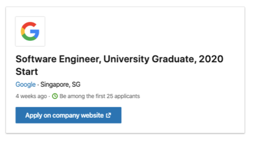

Ideal Job

Click here to go to the link
Description:
Google’s software engineers’ job is to develop technologies to manage, handle Google’s massive information scale that can support, satisfy, upgrade the way users get approach to the vast amount of information in modern day beyond the web search. Software engineers at Google have to work on several projects with a team to produce a totally new, updated products for customers. They also not only innovate Google search but also deal with a large scale of storage solutions, applications, and completely new platform for developers around the world. Moreover, as a member of a versatile team, each person design, deploy, test, maintain software solutions.
The first reason why this job is appealing to me is that although Google has a large amount of workload for their employees, they offer many great services for their workers such as swimming pool, delicious food, facilities for working, etc. They make the best condition for their employees to work as efficiently as they could to help evolve the company. They also proffer attractively high salary. The next reason is this position takes place in Singapore, a country that is very near to Ho Chi Minh City. Therefore, I could often visit my parents who live there. Lastly, Google has a lot of different projects in various areas so I could have a chance to learn new things about the other fields beside my profession and be enabled to work with expertise in IT Industry, both of which make me interest in.
Requirements:
Applicants are required to have graduated with the BA/BS degree in Computer Science or related technical field. Unless, they must have the equivalent practical experience as the BA/BS degree students. Google asks for their applicants’ experience in writing code tools and fixes to solve problems in one or more of the programming languages: C, C++, C#, Java, JavaScript, Go or Python, debugging and submitting the appropriate code for more stability, functionality and scalability. The last requirement is workers who already have experience in or been through project assignments with data structures, algorithms, branching, function-calls, and conditionals. Also, applicants need to show their experience in creating algorithms in order to improve and upgrade the capabilities, speed, efficiency, and reliability of Google’s products.
In term of responsibility, attitudes, and required skills, Google need their software engineers to not only continuously work on their own tasks but also review the others’ code to provide feedback. This is included in the skill of working within a team, and with the other people such as colleagues and managers. Applicants are requested to express their ability in analyzing information and evaluating results to choose the most effective solution for problems. Being consistent with the tasks that are taken on as requested is the last requirement of Google.
My current experience:
In the past years of high school, I was taught Pascal, a little of HTML, and some simple algorithms. At the moment, I have started to learn Python. As I mentioned before, I had experienced as an amateur tester for two weeks so I know a few things about debugging and reporting issues. I have usually worked in a team to complete my assignments thus I believe that I could do well in teamwork but I still need to have a further learning how to act more professional to build and support a productive team.
My plan:
1.Complete the Bachelor Degree of Information Technology at RMIT University. During this progress, I intend to attend some classes as program electives that benefit me such as Mobile Application Development, Algorithms and Analysis, Advanced Programming Techniques (C), etc.
2.Study abroad at RMIT Melbourne (go exchange or transfer) to experience international environment and interact with people from all over the world to boost my confidence. I believe that this will help me impress Google interviewers.
3. Start an internship in smaller companies and work for them to gain as much experience in both technical and soft skill aspect as possible to increase the possibility of being employed by Google. In the meantime, I intend to apply for Bachelor of Computer Science (Honours) at RMIT Melbourne, which is equivalent to Master Degree but it only takes one year to accomplish. This program is offered to every student graduated from Bachelor of Computer Science and the other related programs as long as that student has GPA minimum of 3.0/4.0 in their previous program. Therefore, I would work hard to get this score; otherwise, I would apply to Master Degree at the other universities.